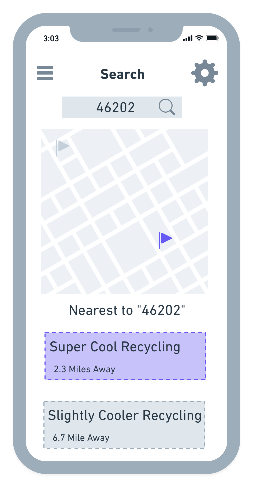
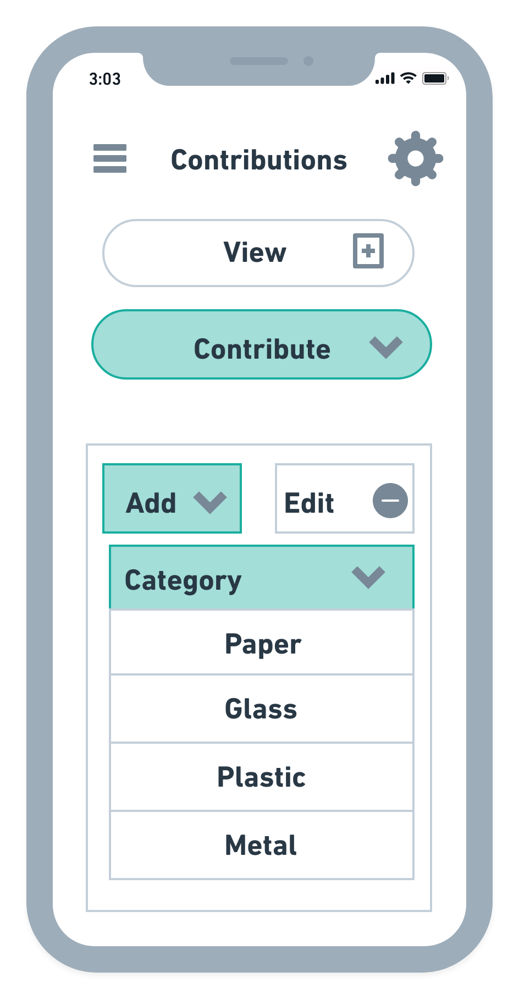

Crumple is the answer to how to make recycling more practical and accessible. The app has the ability to assist users with finding their local recycle drop offs based on their current location. Crumple can help guide users with information on where they can drop off recyclables from plastic, metal, paper, and glass and other recyclables such as appliances. The app also has the ability to connect yourself with people in your local community to where you can compare your contributions to others. Crumple will be working with local grocery stores and gas stations in order to set up recycling stations at these locations.
Design Decisions



There are several different goals that a user has to complete in order to get the best user experience out of Crumple. The goal of the app is to have users start out in the map, then they will have the option to search for a location that is near them with the search option, after this the user will then find directions to their location of choice.
Crumple is a map-based app, so the goal was in turn to make the user not have to jump through hoops to get to other aspects of the app, having it all on one page with the exception of Recycling/Group Leaderboard makes it more easy for a user to interact with. That being said, with this in mind, finishing up what the user wants to do through this page would be the connection that gets users to use Crumple. So to set up this connection, on the map page, there is an icon that is meant for the Recycling/Leaderboard page, the user is able to scan a receipt at their location of choice that will log those elements such as weight into Crumple.